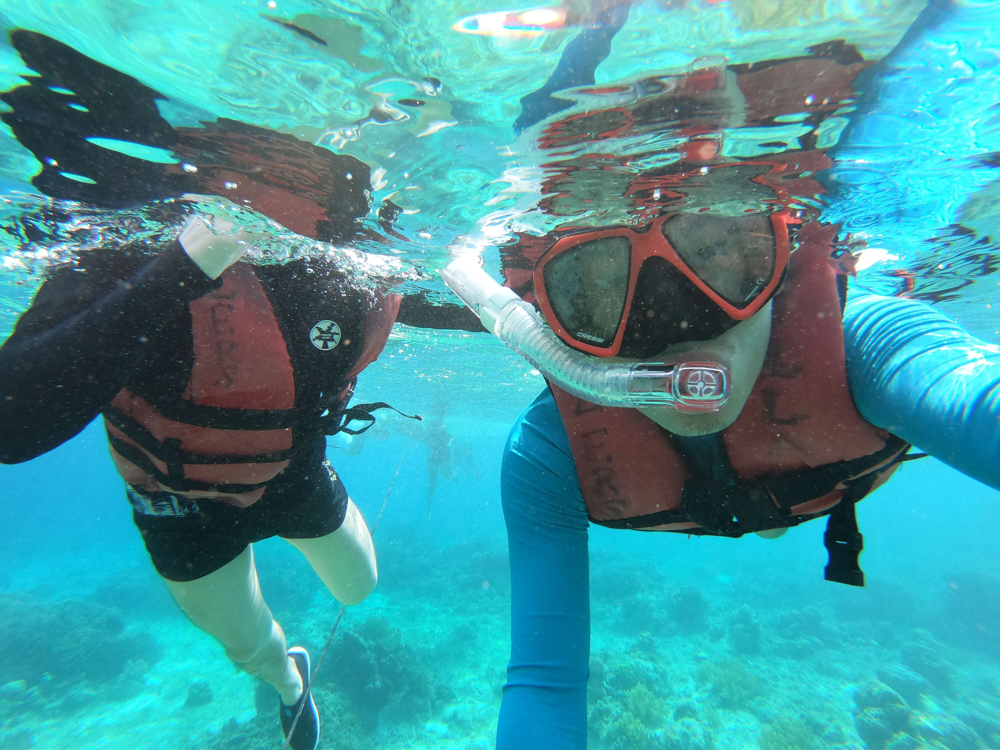
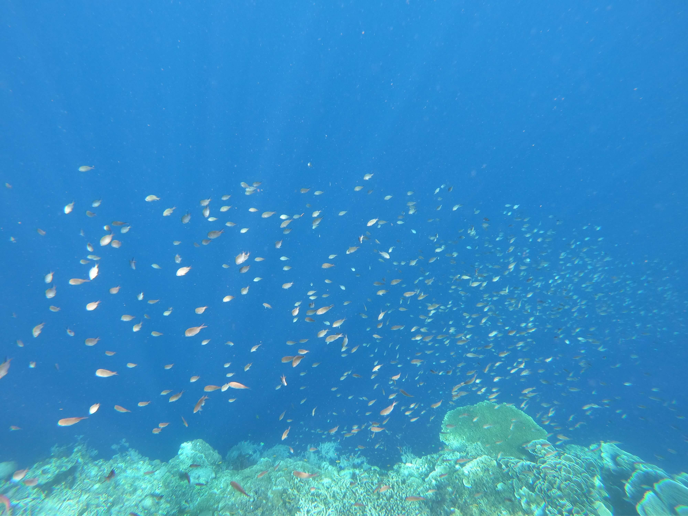
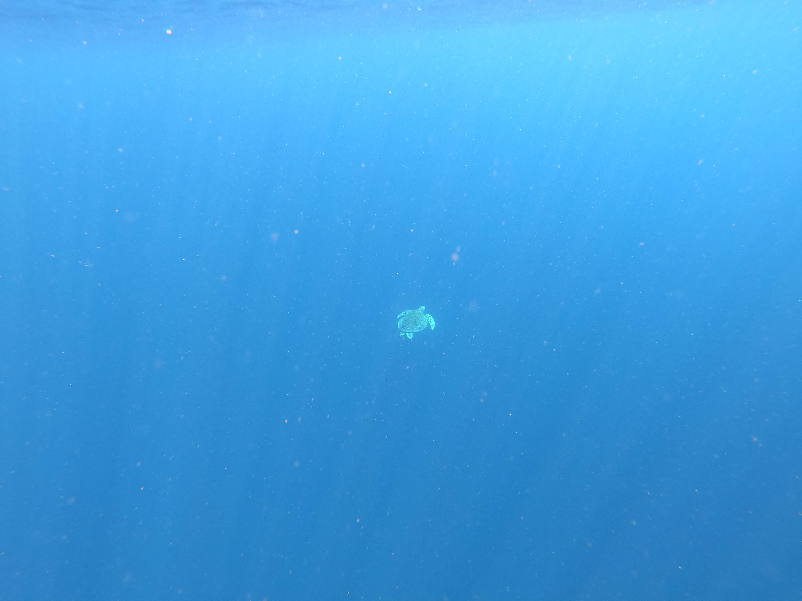

九月，去菲律宾看海

夏天刚开始的时候，和陈斌约好中秋节去菲律宾玩一个礼拜，我们两个差不多讨论了一个夏天，然后订机票、预订酒店和民宿、办签证、学游泳（我是个旱鸭子），等到真要出发的时候才意识到，时间怎么过得这么快。
因为我们都是第一次出国，没有什么经验，所以行程基本都是在国内提前预订好的。另外也看了不少攻略，希望能在有限的时间和资源之内尽可能玩得开心。现在回想起来，其实还是有很多地方没有做足准备，有点措手不及，不过毕竟是第一次，总的来说，这趟旅行体验还是很不错的，如果满分 10 分，我觉得至少可以打 8 分吧。
对于出门远游，我个人觉得如果能不跟团就尽量不要跟团，因为体验会差很多很多。另外，决定你这趟旅行体验的一大部分因素是——和你一起出游的伙伴。所以，尽量选择 1~3 个信的过、靠谱的人。我觉得三个人出游是最棒的，既可以相互照应，又可以避免出现意见分歧时的僵持（由第三个人来做最终决定´͈ ᵕ `͈）。
以下是我旅行中记录的一些流水账（是真真正正的流水账）还有拍的一些照片，仅作为个人记录。涉及隐私，我保留版权，请不要传播到其他地方，谢谢~(´▽`ʃƪ)
2019/9/12 天晴
今天是出发后的第一天，昨天下午坐动车到虹桥，然后从虹桥坐地铁 2 号线到浦东国际机场，9 点多开始等待 check in 排队，10 点 30 开始 check in，然后 11 点通过安检进入候机大厅。在里面逛了下日上免税店，我没啥要买的，就找了个座位坐着玩了会手机，后来实在有点困，戴着眼罩和旅行枕靠了一会儿，1 点开始登机，在飞机上睡了一小会儿，但是没怎么睡好。
今天早上 5 点左右到达马尼拉，然后排队写 arrival card，之所以要排队是因为只有一个地方有公用的笔，所以出门还是尽量自己准备好纸笔，以防万一。然后接着排队等待入境，又排了一个多小时。
7 点多在机场大厅吃完早餐，然后去大厅门口买了张 sim 卡。由于飞机晚点，还有 5 个小时才能乘坐去杜马盖地的飞机，于是听卖卡小哥的建议打算去 Mall of Asia 逛逛。


去了之后才发现那边附近有条海滨大道，由于是清晨，偶尔看到有几个晨跑的人，周边是游乐场，可是没到开放的时间。于是在附近走了走，发现也真没啥可逛的，而且也没有共享单车或者摩托车可以租，商场也还没开门，加上天气闷热还下起了小雨，最终我们决定回机场。
回去的路上和 Grab 司机聊了聊，不过因为英语水平有限，加上他们的口音（估计他听我的 chinglish 也够费劲），只能大概聊聊，发现他们一个月收入折合人民币差不多只有 5000 多人民币。司机聊天告诉我们附近哪哪是 casino，问我们要不要去玩，我心想我们看起来像是能去得起那种地方的人吗！(´⊙ω⊙`)！
回到机场的时候还出了一个小插曲，机场安检保安一开始不让我进，说雨伞不能带进去，好说歹说才同意让我去值机柜台问问，到值机柜台那，柜台小姐姐也告诉我雨伞是不能 hand take 的，只能托运，而且托运这种小物件还必须要有个 bag or box 装着才可以，于是又凭着我的自己听都觉得尴尬的口语和对方交涉了半天，最终发现原来用一个环保袋装着就可以了，也真是不容易。
安检进候机厅的时候又被拦了下来，因为检测到我包里还有电子产品没拿出来，安检小哥仔细翻看了我包里所有的东西，最后来了句 “You’re YouTube vlogger?”。我一开始没搞懂，后来想了想，其实他们应该是很欢迎那种旅行博主的，因为可以帮助宣传发展当地的旅游业嘛，也可能是我想多了吧。
在马尼拉 T3 航站楼的座位上玩了 2 小时 FIFA mobile，然后和陈斌去吃午饭，算是来这边后的第一顿正餐，我点了一个炒面和一个芒果冰沙，味道都不怎么样，随便扒拉了几口完事。
终于登机了，机组 crew 都好热情，虽然没坐过几次飞机，但是依然能感觉到和国内比是天壤之别。上了飞机后突然觉得困的不行，睡了一路，醒来就到 Dumaguete 了，这边机场很小，小到只有一条跑道，不过还好没再下雨，开始放晴了，风吹得人暖洋洋的。

由于做过攻略，出机场后就直奔附近的 Tutu 车停车场，攻略上看到说坐 Tutu 车可以往死里砍价，我们也打算至少砍一半，但是一到现场，我们两个立马就怂了，司机说多少就多少吧。后来才发现我们住的 hotel 其实就在机场附近，那个司机要的价格是正常情况的十倍，不过也认了，谁让我们心软呢ㄟ( ▔, ▔ )ㄏ。

入住后把东西整理了下，然后就收拾了下出门预约明天去 Apo 潜水的船。到了后发现那个潜水店叫 Harolds，小武哥的英文名，哈哈。然后去附近小卖部买了点一次性的洗漱用品，又看了美团上的热门推荐去了那家好像口碑很好的餐厅 Mooon Cafe 打卡。第一次吃当地口味的餐厅，感觉…也就一般吧，对我来说菜品稍微有点辣。
之后去杜马盖地的海滨大道逛了逛，拍照打卡。

晚上回酒店后早早地洗澡上床睡觉了，今天真的是特别累了。
2019/9/13 阵雨
今天早上 4 点半就醒了，昨晚 8 点不到就睡了，应该是我这一周以来睡的最舒服的一觉了，突然觉得酒店的床睡的特别踏实，特别舒服。
整理好背包换好衣服就出发去潜水店了，外面下起了小雨，到了之后发现店门关着，于是先去附近早餐铺里随便买了点早饭吃。再去那边时门口有几个人坐在台阶上，一问才知道所有去 Apo 的船都停开了。最担心的事果然还是发生了。
难免有点沮丧，即使现在更改行程也不太可行，因为酒店、机票都已经订好，更改太麻烦而且也太费钱，所以我们决定今天就在杜马盖地市区或者附近逛一天。
回酒店后，陈斌还是没完全死心，又看了攻略，然后提议我们自己坐车去 Malatapay 码头碰碰运气，如果能出船的话就自己租船去 Apo 岛，然后到那边再找人带我们去浮潜。
说走就走，我们租了一辆 Tutu 车过去，一路上风雨交加，快到码头的时候，天已经开始放晴了。尽管如此，在码头打听了下，这里今天也不开船。于是我们只能在海岸边逛了逛。

这应该是我第一次真正见到大海吧，虽然海滩上的沙子都是黑色的（不是脏，可能是参杂了黑色的矿物质），但是我还是在沙滩上玩了很久，还把人字拖给玩丢了，被浪花冲到不知道哪里去了(」・ω・)」。

回去的时候，Tutu 车司机建议我们去 Dauyin 碰碰运气，不过我们觉得今天这天气阴晴不定的，还是放弃了，决定去机场附近的 Silliman Beach 看看。
到了那边才发现其实也是黑海滩，而且海滩上都是渔民的渔船，有些一家人就住在海岸边搭的小棚子里。不过更惊讶的是，刚好碰到有飞机降落，这应该是我这辈子第一次这么近距离观察到飞机降落了吧。

回酒店后换了身衣服（之前穿的沙滩服），然后我走路去附近的商场买了两条毛巾和一双拖鞋。近距离观察了下这边的街道，怎么说呢，给人一种乱糟糟的感觉，而且有点脏乱，可能毕竟小地方吧。
中午我们决定去 Robinson mall 吃午饭，那边有家 Hukad 餐厅，似乎是当地人比较喜欢去的餐厅。吃了下觉得的确非常棒，有点出乎意料，菜品都不错，而且价格也非常公道，可惜忘记拍菜单了。
下午去附近的几个景点逛了下，Chinese Bell Church, Siliman University, 杜马盖地塔楼等等。


然后还在 Siliman 大学遇到一对 CP，难得遇上同胞（后来才发现其实到处都能碰上中国人），和他们聊了聊来的路上的感受，机票、回程路线、景点等等，还加了微信。
之后回酒店休息了一会儿，晚上决定去杜马盖地海滨大道附近的一家餐馆吃晚饭，是我随便 google 到的。在那看到不少西方面孔的外国人。我和陈斌都喝了一点啤酒，然后他和我分享了追他女友的过程以及一些心得´͈ ᵕ `͈，然后还帮我分析了下为何我目前依旧单身。。。我觉得自己的确有时候做事不够果断，想的太多，有时候太担心结果反而不能好好享受过程。

晚上回酒店后洗漱完就睡了，因为明天去锡基霍尔要早起坐船。
2019/9/14 天阴
今天早上 5 点的闹钟，真的很想多睡一会儿，无奈只能强迫自己起床。洗漱完了人还是迷糊着的，然后就坐上了去码头的 tutu 车，因为时间比较早，所以要 100 比索。
到了码头发现 fast craft 船被 cancel 了，于是我俩商量了下，我排队去买 roro（轮渡）7 点的票，陈斌去退 ocean jet 的船票。
上了船之后，我有点兴奋，因为第一次坐这样的轮渡，陈斌教了我怎么用 go pro，然后我不停拍着港口和海面，采访陈斌对这趟旅行到目前为止的感受(｡･ω･｡)。我边上坐了一位同样去 Siquijor 旅游的菲律宾人，忘了问他们是哪里人了，也有可能问了但是我忘记了 (-_-)ゞ゛


大概两个多小时之后，我们到了 Larena 港口，在那里租了一辆摩托车。其实一开始想租两辆的，可是因为我不怎么会骑，我试骑的样子还被女店员嘲笑了，哦不，不是嘲笑，是捧腹大笑的那种，一点都不遮掩。老板告诉我为了安全起见，还是不要自己骑为好。于是，陈斌骑着摩托车带着我，朝预订好的 Airbnb 海滨民宿出发。
骑到中午还没到，于是在当地有名的快餐连锁店 Jollibee（我们去的几个岛上到处都能见到，老板好像还是中国人），吃了点东西后继续出发。大概 11 点多才到，发现这个民宿还有一个自己的小沙滩可以供我们玩耍，心中暗喜。


在海滩边玩了一会儿沙子，陈斌还下去游了一会儿，然后我们就收拾东西出发开始我们的环岛游了(｡◝‿◜｡)！
一开始想先去 Cambugahay Falls 的，结果中途照着路标去了一个不知名的小瀑布，名字和 Cambugahay 很像，然后还在那里尝试了人生中第一次 swing jump。虽然我跳水姿势跟个傻子一样，而且也喝了很多口水，但是现在想起来还是觉得挺好玩的。唯一觉得可惜的是忘带浮潜装备，没能尽情地玩水。
然后又去了 Salagdoong Beach，在那边碰到好多好多中国人。那里有个高台跳水，可是我和陈斌都不敢去试。


之后继续我们的环岛游，一路拍了好多照片和视频。


晚上在 Larena Triad 山顶餐厅吃了晚饭，然后开始回程。


晚上骑摩托车都有点怕怕的，虽然不是我在骑，可是有些地方连路灯都没有啊(´−｀) ﾝｰ。

7 点多回到民宿，在沙滩边的躺椅上吹了好久的海风，躺累了就去吊床上继续躺着。吹着海风，听着一阵阵的海浪声，到 9 点多了才去洗澡。
此刻的我刚洗完澡，在楼下门廊上写今天的游记。然后心里回忆着过去一周的事情，工作上的，还有来这边之后的这几天。逐渐开始回忆起自己过去这二十几年的人生，以及心里有时候会浮现出的那一个个问题：我到底想要过什么样的生活？我想要成为什么样的人？我做的选择是对的吗？如果当初没这么选会发生什么呢？
还是想办法把目前的事情做好吧，已经发生的事没有办法改变，未来的事谁又能猜得到呢？
困了，上去睡了。
2019/9/15 天晴
昨晚睡的挺晚的，早上却 5 点多就自然醒了，然后赖在床上到 6 点半才起床。洗漱完，去门口逗主人家的小狗玩了一会儿，虽然好像只是一只土狗，但是很活泼很可爱。此刻正在棕榈树下静静地坐着看海，什么都不用想的感觉真好。


今天我们继续摩托车环岛游，只不过走的是和昨天相反的方向。


我们最后在锡基霍尔码头买了明天去薄荷岛 Tagbilaran 的船票，还在检票口和偶遇的在当地住了 10 多年的葡萄牙人聊了一会儿，还聊到香港现状，他说香港总有一天会恢复平静的，到时候他会带他家人去香港还有大陆玩。看着他骑摩托车带他妻子（很年轻漂亮的本地人）的样子，我心中突然升起了以后可以来这里生活养老的想法，我猜幸福指数应该也挺高的吧。
继续环岛，下午2点左右到达 Tulapos 海洋保护区，在这里第一次尝试了浮潜，见到了沙丁鱼一样的鱼群，两个导游说下面还有大海龟，可惜我没有看到。因为第一次下海浮潜，浮潜管里偶尔灌进几滴海水，从来没尝过海水的味道，所以让我非常不习惯，才知道原来海水是这么得咸。


浮潜回来后，在海滩边捡了一些贝壳，滩涂上有个秋千，于是我跑了过去。面前是大海，头顶是蓝天，脚下是浅浅的海水，下面是白色松软发着光的沙子，我在秋千上开心得像个孩子。

离开 Tulapos 之后，原本想再出发去 Cambugahay Falls 的，可惜等我们到那边的时候景点已经关门了，只能明早再来了。

回来后洗了个澡，舒服多了，然后和陈斌一起看了下用 Go Pro 拍的视频，我们用了防水套，而防水套外壳有层不透明的膜，拍的视频几乎没法看。

晚上我们去附近的路边餐厅吃了晚餐，餐厅服务员小哥很活泼的一个人，还能和我们聊上几句普通话。餐厅后面有人在唱卡拉 OK，来这边发现好多小卖部或者小饭馆里都有这种唱卡拉 OK 的地方，给我感觉这里民风真的好纯朴。饭后和老妈视频了一会儿，然后回民宿沙滩边躺着吹海风。
美好的一天结束了，期待明天的行程(❁´▽`❁)✲ﾟ。
2019/9/16 天晴
今天照例 4 点半就醒了，然后在床上躺了一会儿才起床去洗漱。整理完东西才 6 点半都不到，此刻在沙滩边等待陈斌洗漱完然后出发去 Cambugahay Falls。

早上 7 点多到达 Cambugahay Falls，又遇到昨天来的时候碰到的那个小哥，原来他是这儿的导游。下去之后发现这边其实这里所谓的瀑布只是两个挺小的水潭而已，上面最高的落差也不过几米。导游小哥看我们有点失望，于是过来怂恿我们去玩树藤跳水，我原本只是想下水游会儿泳，可是耐不住小哥太热情（他们靠这个吃饭的），还是被拉着去跳了两次，这里跳台比第一天去的那个小瀑布高了不少，胸口皮肤被水面撞的生疼。


在那边晒了会儿太阳，然后继续赶路。由于时间充足，于是又去了昨天去过的 Tulapos 海洋保护区，发现涨潮了，滩涂都不见了。在那边晃荡半个小时，然后继续赶路去 Larena 码头，换完座位票、交完 Terminal Fee 后我俩无处可去，于是去附近的超市逛了逛。发现这边超市有点像 Costco，有些区域是专门为大批量采购的人提供的，而的确有不少人是开着皮卡买一大堆东西然后在收银柜台结账。
我们挑了不少零食，有些也看不懂是啥，反正就当午餐了，然后去码头休息室等待开船。
在休息室的时候，看到各个国家、各种肤色的游客聚集在这里，这么一个小地方能如此开放，吸引到全世界这么多游客来玩，感觉真的挺不容易也挺神奇的。
船开了之后，大概 1 个小时多一点就到了 Tagbilaran 码头，发现那边码头的保安（或许是警察？）还兼职提供介绍摩托车出租业务，他帮我们打电话联系了摩托车出租店的人来接我们。
租完车我们就去找民宿酒店了，出发之后明显能感觉到这个城市比 Dumaguete 和 Siquijor 都要更发达一些，道路四通八达，也更拥堵。我们走错路，结果绕了一大圈才找到民宿，挺偏僻的一个地方，离市中心很远。

整理完东西安顿好之后差不多就 2 点了，于是我们赶紧出发去 Panglao 岛找明天带我们出海的船只。先是来到 Momo Beach，那边有很多潜水店，并没有找到租船的店。然后又来到 Alona Beach，在一个海滩上方正巧碰到了一个独自坐着休息的人，问了才知道他正巧就是专门接游客出海浮潜生意的船长，我们一开始都不太敢相信自己的好运气。于是我们和他谈好租船的价格以及时间。算下来，我们四个人，去 Balicasag 浮潜三个地方，平均每人也只要 100 人民币左右，还是非常划算的。
之后，船老大还带我们去看了他的船，大概十来米长，能坐 8、9 个人吧。我们在海岸边和他聊了一会儿天，然后付了定金。又遇到他几个朋友在滩涂上捡海货，过去和她们聊了一会儿，发现他们在捡一种和螺狮差不多的东西，据说炖汤很好吃。


之后我们就离开了海滩，去了附近的一家中国人开的餐馆吃晚饭，名字好像是叫 Molly Restaurant，味道不怎么样还死贵死贵的，而且还要收 5% 的小费，果然只有国人才会坑国人。
晚上走了岛的东面那条路，来的时候走的西面，心想这样我们就算环 Panglao 岛一圈了，哈哈。
回到民宿时已经 8 点了，洗漱一下准备好明天出海时用的东西就准备上床睡了。明早 7 点沙滩上集合，从我们住的民宿到那边摩托车要开 40 多分钟，所以我们 6 点左右就得出发。
2019/9/17 天晴
早上 5 点多在鸡叫声中醒来，匆匆收拾下就出门了 。

到了之后，那对上次在 Silliman 大学认识的朋友已经先到了，于是等船长和他的助手朋友来了之后我们就出海了。

我们今天要先去 Balicasag 岛上的三个地方浮潜，然后再去 Virgin Island。船开了差不多半个小时就到了 Balicasag 岸边，由于两个小伙伴没吃早餐，于是我们等他们吃完早饭再出发去浮潜。

出发了，今天阳光很好，甚至有点太晒了，还好我带了长袖沙滩服。


浮潜看到各种鱼，还有海龟。但是每个浮潜的地方都有好多船，海面上飘着各种各样的人，场面蔚为壮观ʘ‿ʘ。我们基本在每个地方待半个小时左右吧。




到 10 点多，我们开始出发去 Virgin Island 附近的珊瑚礁，其实离得也不远，就在 Balicasag 往北开船 10 多分钟吧。那边水下真的超级美，一大片珊瑚礁，各种颜色的鱼在珊瑚礁附近成群游荡，还有许多巨大的海星。我们在那里浮潜好久，我都不想上船了(◍•ᴗ•◍)❤。




然后船老大带我们去了 Virgin Island，其实就是岛礁比较浅的地方。现在想起来，那边的沙子应该就是珊瑚的『残骸』吧。
岛上人很多，很多人在这里自拍、合照，『岛』中心还有一个小集市，有一些小贩在售卖当地的一些小吃和椰子，我请船长吃了个烤香蕉，然后还被一个卖“珍珠项链”的贩子给缠住了一会儿，“送给妈妈”，还一路跟着我，直到回到船边，看我坚决不买于是改口让我请他吃个烤香蕉，不过我最终还是拒绝了他。不能助长这种讨要吃喝的行为！
回到沙滩边已经下午 1 点多了，我和陈斌决定回民宿休息一会，告别了那对 CP（其实我们也只是想一起租船，分摊点费用而已）。我们回去走的是 Panglao 岛中间的那条路，这样 3 条主干道我们就都走过了，不过路边风景好像都差不多，学校、饭店、旅馆、大片空地，建筑也没什么特别的。
回到民宿已经快下午 3 点，我洗了个澡，然后整理了下东西，差不多就 4 点了，去岛上逛是来不及了，于是我们决定待会儿出去吃个晚饭就直接回来了。
时间还有点早，去门口小卖部买了瓶可乐，然后小卖部老板聊了一会儿天。了解到这店其实是他哥哥的，他是个海员现在正休假，所以在店里帮忙看会儿店。他说他今年 36 岁，有三个娃，最大的儿子正在上高中，这会儿差不多快要放学回来了。他告诉我他去过很多国家，但是如果有机会的话，他会选择带家人去中国而不是去美国旅游，我问为什么，他说因为中国物价更低，而且也有更多好玩的东西，适合带家人过去玩。我心想这和我们来菲律宾旅游的原因是一样的啊，哈哈。
晚上去了附近的一家我从 Google 上随便搜到的餐厅，结果等菜上来后发现分量多到惊人，我们两个人根本吃不完。而且也没办法打包回去吃，因为明天就要出发回去了。
回来后，整理了下东西，然后和家人视频了下，发了个朋友圈就睡了，原本想玩下 FIFA 的，可惜这里网络实在太差了。
凌晨居然被热醒过来，一看时间才 12 点，把空调温度调低之后还是睡不着，肚子很难受，可能是晚上吃的东西太过油腻，消化得不是很好。于是坐在床上冥想，睡不着，只能打开手机继续记一点自己的旅途流水账。
再过几个小时就要去码头然后离开这里了，心情有点复杂。闭上眼，感觉到整栋房子都在沉睡中，而我，此刻的我，真的是世界上最孤独的人了。
2019/9/18 阴天
早上 2 点多终于能躺下睡一会儿了，睡到 5 点钟醒来，洗漱一下马上就要出发了。再见，Bohol Island : )

（早上 7 点 30）我们登上回 Dumaguete 的船了，算了下时间，大概9点半到。打算到那边先去做个 SPA，然后再出来逛逛。
（早上 9 点 30）到达码头，坐 tutu 车去 Harolds 那存了下行李，然后就出发去谷歌搜索到的盲人按摩店，350 就可以做一个全身按摩，还是相当划算的。按摩完感觉身体放松了不少。然后找地方吃午餐，Casabulanka Restaurant，完全是被名字吸引，但其实并不怎么好吃，之后就出发去机场了。
（中午 12 点 40）坐 tutu 车到杜马盖地机场，门口在装修，一开始都没认出来还不敢走进去。
在 Check in counter 等到 1 点 20 才开始 check in。进候机室后，听着盲人歌手弹的吉他，小睡了一会儿。这边好多公共场合都有盲人表演者，国内好像挺少看到有这种工作的。
（下午 5 点）抵达马尼拉，飞机延误了大概 20 分钟，下飞机后去同一航站楼找到宿务航班后排队 check in（排队花了 1 小时），然后在航站楼内吃了碗面，又去逛了下免税店和礼品店，把手头的比索全花完了。
（晚上 7 点 20）开始登机，在飞机上基本没怎么睡。晚上 11 点 20 到达浦东机场，然后去坐机场大巴到虹桥站，大概凌晨 2 点左右到了虹桥。因为 5 点才开始检票入站，所以我们只能在大厅里等，找了个座位睡了大概一个多小时，睡得手脚都麻了，只能坐着看手机，偶尔起来走动一下。
到了 5 点，开始检票进站，进了候车大厅后赶紧去楼上买了早餐，豆浆油条锅贴，久违的味道。
7 点到达杭州东站，然后去坐地铁，发现 4 号线转 2 号线也可以坐，而且换站距离更短。
早上 8 点，出地铁。
走回小区的路上，看到来来往往赶着通勤上班的人们，有人经过的时候会不由自主地对我这个背着大包小包的人上下打量一番。而今天的天气出奇得好，秋日的阳光照在身上暖洋洋的，突然间我觉得自己好幸运。
Life is wonderful.